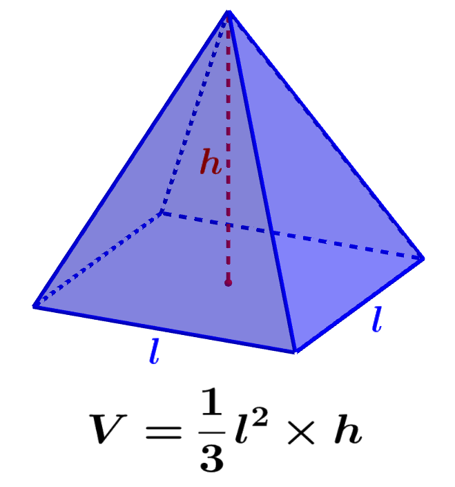

A pirâmide de base quadrada é uma figura tridimensional formada por um quadrado como base e quatro triângulos que se encontram em um ponto chamado vértice.
É um sólido geométrico pertencente ao grupo das pirâmides, e tem diversas aplicações em arquitetura, engenharia e até na arte, sendo o formato das pirâmides do Egito.
Características principais:
- Possui 5 faces (1 base + 4 faces laterais triangulares);
- Tem 8 arestas (4 da base e 4 laterais);
- Apresenta 5 vértices;
- É um exemplo de sólido geométrico não prismático.
O cálculo do volume dessa pirâmide é feito pela fórmula:
Volume = (Área da base × altura) ÷ 3
Essa figura é muito estudada no ensino fundamental e médio, sendo útil para entender conceitos de geometria espacial, simetria e projeção.
Continue acompanhando o Salesiano News para aprender mais sobre figuras geométricas!
← Voltar para a página principal